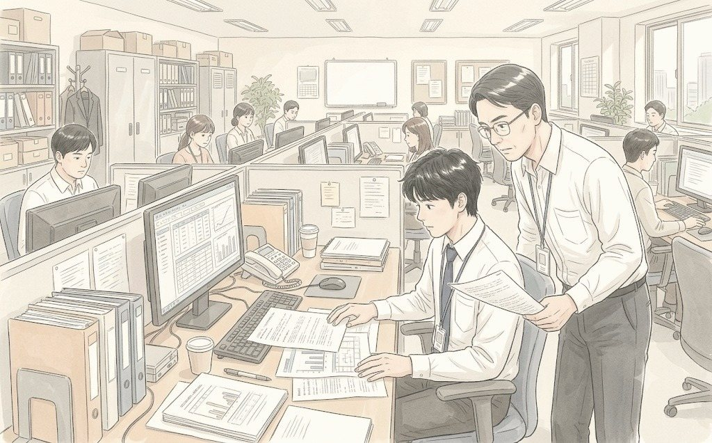
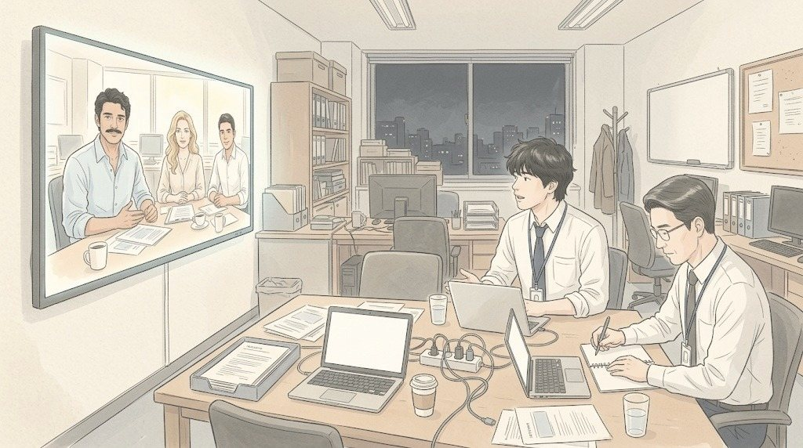
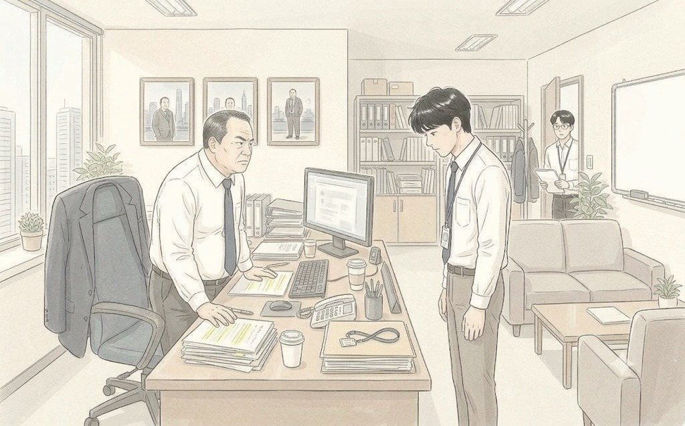

월요일 오전 11시. 해외사업팀장실.
진만석 상무는 출력본 한 장을 책상 위에 던졌다. 종이가 미끄러져 이우진의 발 앞에 떨어졌다.
"이 메일을 어디서 구했어요?"
토요일 보고서 이우진 장표에 인용된 한 줄이었다.
'Our customers don't leave because of price. They leave because they cannot pay, and they cannot wait.'
(우리 고객은 가격 때문에 떠나지 않습니다. 결제를 할 수 없고, 기다릴 수 없어서 떠납니다.)
멕시코 법인 마케팅 매니저 카를로스 멘도사가 보낸 메일이었다. 날짜는 1월 14일. 석 달 전이었다.
"해외 법인 공유 폴더에 있었습니다. 고객 목소리를 모으다가..."
"공유 폴더요. 그 폴더는 해외사업팀 폴더예요. 온라인팀이 왜 거길 뒤져요?"
"권한이 열려 있었습니다."
진만석이 의자에 등을 기댔다. 쉰여섯 살. 해외사업팀 12년, 그중 팀장 6년. 그의 책상 뒤 벽에는 두바이, 상파울루, 자카르타에서 찍은 사진이 걸려 있었다. 사진 속 그는 늘 웃고 있었다. 지금은 웃지 않았다.
"이 과장. 이 메일 한 줄 때문에 토요일에 사장님이 나한테 뭐라고 했는지 알아요?"
이우진은 알았다. 회의록을 쓴 사람이 그였으니까. 문혜경은 이렇게 물었다. '이 메일을 석 달 전에 받았는데, 왜 제 앞에는 오늘 처음 왔어요?'
"그 메일, 멕시코 애가 자기 실적 안 나오니까 핑계 대는 거예요. 결제 시스템 탓, 배송 탓. 현장은 늘 그래요. 그런 걸 다 사장님께 올리면 회의가 안 돼요."
이우진은 고개를 숙이고 있었다. 하지만 머릿속으로는 그 메일의 나머지 부분을 떠올리고 있었다. 한 줄이 아니었다. 열한 페이지였다.
월요일 오후 2시. 온라인기획파트.
이우진은 카를로스의 메일 원문을 다시 열었다. 영어로 쓴 열한 페이지. 표와 사진이 섞여 있었다.
첫 번째 표. 멕시코 온라인 구매자의 결제 수단. 신용카드 38%. 나머지 62%는 편의점 현금 결제, 은행 송금, 현지 간편결제였다. 청연 멕시코 몰은 신용카드만 받았다.
두 번째 표. 배송 기간. 경쟁사 평균 3일. 청연 9일. 본사 물류 규정 때문에 모든 물건이 수도 멕시코시티 창고 한 곳에서만 출고되었다.
세 번째 사진. 소다랩 멕시코 몰 화면. 결제 수단 아이콘이 일곱 개 있었다.
마지막 페이지에 카를로스는 이렇게 썼다.
'I have sent similar emails four times since last year. I am not sure anyone reads them.'
(작년부터 비슷한 메일을 네 번 보냈습니다. 누가 읽고 있는지 모르겠습니다.)
이우진은 그 문장 앞에서 한참 손을 멈췄다. 자카르타보다 더 먼 멕시코시티에서, 누군가 석 달 동안 답장을 기다렸다.
"우진아."
한지석이 뒤에 서 있었다. 진만석 상무실에서 무슨 일이 있었는지 이미 들은 얼굴이었다.
"진 상무님이 많이 뭐라고 하셨어?"
"공유 폴더 뒤졌다고요."
"그건 내가 사과할게."
"파트장님. 이거 보세요."
이우진은 마지막 페이지를 띄웠다. 한지석은 오래 읽었다. 그리고 의자를 끌어와 옆에 앉았다.

"이 사람한테 연락해 볼 수 있어?"
"해외사업팀 통해야 하지 않을까요?"
"해외사업팀 통하면 또 석 달 걸려."
한지석은 잠깐 생각했다. 그리고 말했다.
"권 상무님한테 먼저 보고하고, 진 상무님한테도 참조 넣어. 숨기지 말고. 우리가 법인이랑 직접 통화한다는 걸 진 상무님이 알게 해."
화요일 밤 10시. 멕시코시티는 오전 8시였다.
화상회의 화면에 콧수염이 짙은 남자가 나타났다. 카를로스 멘도사. 서른여덟 살. 청연 멕시코 법인 마케팅 매니저 6년차. 뒤로 보이는 사무실 창밖은 햇빛이 쨍했다. 그는 커피잔을 든 채 웃지 않았다.
"Seoul? Online team? I have never talked to the online team."
(서울이요? 온라인팀이요? 온라인팀이랑 얘기해 본 건 처음인데요.)
"Hi, Carlos. I'm Woojin Lee. I read your email. All eleven pages."
(안녕하세요, 카를로스. 이우진입니다. 메일 읽었습니다. 열한 페이지 전부.)
이우진의 영어는 느렸다. 하지만 문장 하나하나를 정확히 끊었다. 회의 전에 세 번 연습한 문장이었다.
카를로스가 커피잔을 내려놓았다.
"All eleven?"
(열한 페이지를 다요?)
"Yes. Especially page nine. The payment table."
(네. 특히 9페이지. 결제 수단 표요.)
카를로스는 화면에 가까이 다가왔다. 처음으로 표정이 움직였다. 놀람인지 의심인지 알 수 없었다.

"Nobody has ever mentioned page nine."
(9페이지 얘기한 사람은 당신이 처음이에요.)
한지석이 옆에서 질문을 이어 갔다. 편의점 현금 결제를 붙이려면 무엇이 필요한가. 지방 창고를 쓰면 배송이 며칠로 줄어드는가. 카를로스는 질문마다 숫자로 답했다. 석 달 동안 준비해 둔 숫자들이었다.
통화가 한 시간을 넘겼을 때, 카를로스가 갑자기 물었다.
"Can I ask you something? Why now?"
(하나 물어봐도 돼요? 왜 지금이에요?)
이우진은 잠깐 망설였다. 그리고 솔직하게 답했다.
"Our president asked why we didn't know. We didn't have an answer. Your email was the answer."
(우리 사장님이 왜 몰랐냐고 물었습니다. 저희는 대답을 못 했어요. 당신 메일이 그 대답이었습니다.)
카를로스는 한참 화면을 봤다. 그리고 웃었다. 이번엔 진짜 웃음이었다.
"So the president read my email before my own team leader in Seoul did."
(그러니까 서울의 제 담당 팀장보다 사장님이 제 메일을 먼저 읽었네요.)
수요일 오전 8시. 해외사업팀 앞 복도.
이우진은 진만석 상무실 앞에 서 있었다. 화상회의 내용을 정리한 한 장짜리 메모를 들고. 한지석이 직접 오겠다고 했지만, 이우진이 자기가 가겠다고 했다. 공유 폴더를 연 건 자기였으니까.
해외사업팀 류재민 대리가 지나가다 멈췄다. 입사 3년차.
"과장님, 상무님한테 가시게요?"
"응."
"어제 화상회의 하신 거, 상무님 다 아세요. 참조로 받으셨잖아요."
"화나셨어?"
류재민은 대답 대신 주위를 둘러봤다. 그리고 목소리를 낮췄다.
"과장님. 그 카를로스 메일요. 사실 저도 1월에 읽었어요. 상무님께 올렸는데 '핑계'라고 하셔서... 그 뒤로 비슷한 메일 오면 그냥 폴더에만 넣었어요."
이우진은 류재민을 봤다. 서른한 살. 그는 미안한 얼굴이 아니었다. 지친 얼굴이었다.
"재민 씨 잘못 아니야."
"알아요. 근데 제 잘못 아닌 게 더 이상해요."
상무실 문이 열렸다. 진만석이었다. 그는 복도의 두 사람을 번갈아 보더니 이우진에게 손짓했다.
"들어와요."
상무실 안. 진만석은 이우진이 내민 메모를 읽지 않았다. 대신 책상 서랍을 열었다. 안에서 출력된 메일 뭉치를 꺼냈다. 카를로스의 메일 네 통. 작년 4월, 7월, 10월, 그리고 올해 1월.
모두 출력되어 있었다. 모두 형광펜이 칠해져 있었다.
"읽었어요. 다."

이우진은 말을 잃었다.
"읽었는데 안 올렸어요. 왜인지 알아요?"
"...모르겠습니다."
"올리면 내가 몰랐다는 게 되니까요. 12년 동안 이 자리에 있었는데, 멕시코에서 카드 말고 편의점에서 돈 낸다는 걸 내가 몰랐다는 게."
진만석은 메일 뭉치를 책상 위에 내려놓았다.
"이 과장. 이번 토요일 보고에 이거 내 이름으로 올려도 돼요?"
이우진은 대답하지 못했다. 그 질문이 무슨 뜻인지 바로 알아들을 수 없었다. 공을 가져가겠다는 뜻인지, 책임을 지겠다는 뜻인지.
진만석이 덧붙였다.
"해외사업팀이 4번 받고 안 올렸다고, 내가 직접 말할게요. 온라인팀이 찾았다는 것도."
그는 처음으로 이우진의 눈을 똑바로 봤다.
"그리고 공유 폴더 권한은, 그냥 열어 둘게요."
(EP18 끝)